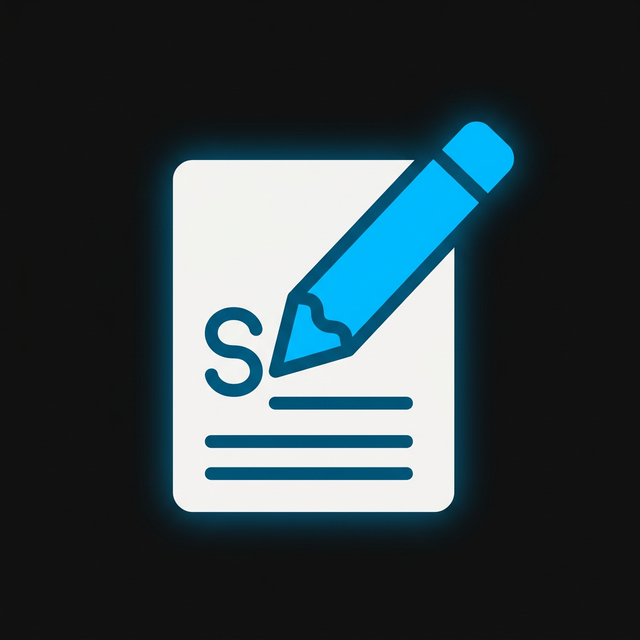

RixAI Копир
Токены (~LLM):
0
Символы:
0
Шапка (Ссылка, Автор, Дата)
Авто: Вся страница или выделенный текст
Выбрать блок
Печать
Мульти:
Alt/Opt
Ctrl
Cmd/Win
Z
X
C
S
В буфер (Разметка Markdown)
В буфер (Обычный текст)
В буфер (Для нейросетей)
Мульти-сессия
Добавить страницу в Сессию
Скачать Сессию (0 стр.)
Очистить сессию